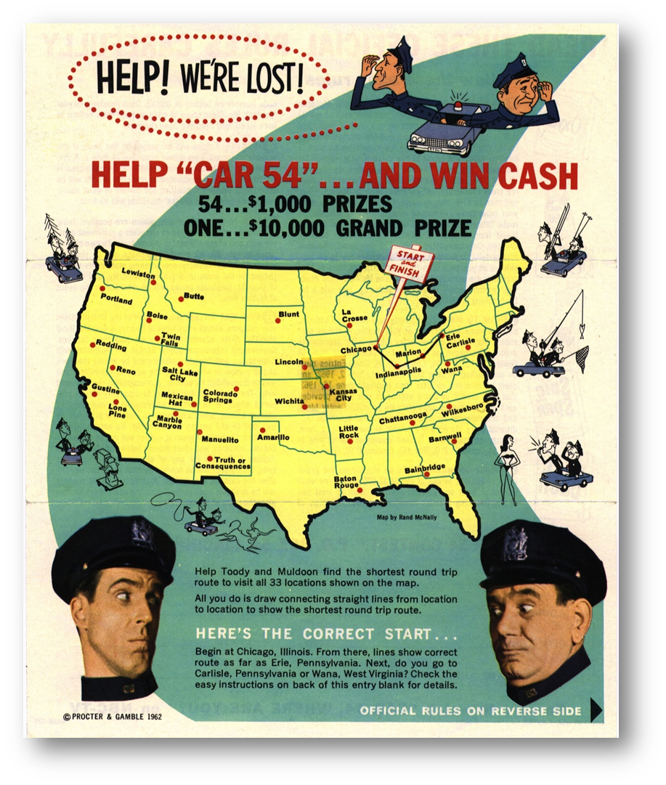
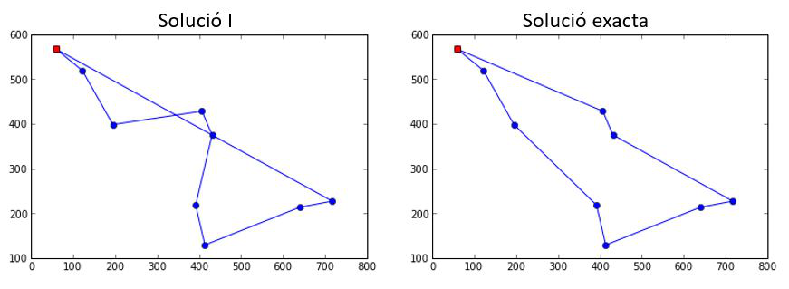

class: center, middle <center><img src="images/ub.png" width="150"></center> # **ALGORÍSMICA** ## Introducció a l'algorísmica Jordi Vitrià, Mireia Ribera .blue[jordi.vitria@ub.edu] | .blue[ribera@ub.edu] --- class: summary ### Resum del tema. + **Conceptes**: + Algorisme, + Input(entrada) i Output(sortida), + Correcció, + Eficiència, + Errors, + Llenguatge de programació + Primitives (símbols), sintaxi, semàntica estàtica, semàntica --- #### <p style="background-color: #f18973;">Treball Personal Asíncron</p> ## Què és un algorisme? <center> <iframe src="https://www.bbc.co.uk/ideas/videos/why-algorithms-are-called-algorithms/p07gdlwf/player" width="500" height="440" scrolling="no" style="overflow: hidden" allowfullscreen frameborder="0"></iframe> </center> --- ## Què és un algorisme? <div class=warnred> Definició de la <b> Wikipedia</b> : Un algorisme és una seqüència finita, no ambigua i explícita, d’instruccions per a resoldre un problema. </div> La definició d’aquesta assignatura: <div class=warnblue> .bold[Un algorisme és qualsevol procediment computacional que pren un (o una sèrie) de dades/valors com a *entrada* i genera alguna dada/valor (o sèrie de dades/valors) com a *sortida*.] </div> + Els algorismes són les **idees/estratègies** que hi ha darrera els programes per resoldre un determinat problema. + Els algorismes són independents del llenguatge en que estan escrits. El mateix algorisme escrit en dos llenguatges diferents pot tenir una aparença superficial molt diferent. + Els algorismes sí que depenen de la representació de les dades. + Els algorismes interessants són els que resolen problemes generals. Els problemes específics es resolen reduïnt-los a problemes generals. --- ### Exemple computacional (arrel quadrada) Quan definim un problema (per exemple, el càlcul de l'arrel quadrada) a resoldre mitjançant un algorisme normalment hem d'especificar tres elements: > Quin tipus d'*entrades* tindrà: Un nombre `a` enter que sigui igual o major que 0. > Quina *sortida* esperem: Un nombre `b` tal que `b*b=a`. > Quins *requeriments* imposem: Volem una solució **correcta i eficient**! -- Donats aquests tres elements pot haver-hi **diversos algorismes** que resolen aquest problema. El que s'explica a l'escola és un d'ells. Heró d’Alexandria (10 dC-70 dC) ja en va proposar un altre: + Comencem amb un nombre qualsevol `g`. + Mentre `g*g` no s’assembli prou a `a`: + Calculem un nou candidat `(g+a/g)/2`. + Donem com a resultat l'últim valor de `g`. --- ### Exemple computacional (arrel quadrada) Codificació en Python: ```python def hero(a,error): import math g = 1.0 while math.fabs(g*g - a) > error: #fabs vol dir nombre absolut en decimals g = 1/2*(g+a/g) return g ``` Hem pres diverses decisions en aquesta implementació: + Comencem amb `g=1`. + La regla `"a no s’assembli prou a b"` l'implementem comprovant que `|a - b|` sigui un valor prou gran. Si executem `hero(49,0.0001)`, l'ordinador retorna `7.000000141269659`. --- ## Correcció i Eficiència Algorísmica Un algorisme és **correcte** si podem demostrar (matemàticament) que retorna la sortida desitjada per a qualsevol entrada legal (per al problema de l’arrel quadrada, això vol dir nombres positius o 0). <div class=warnred> Demostrar la <b> correcció</b> és fàcil per alguns algorismes, difícil per la majoria i fins i tot impossible per alguns! </div> -- Un algorisme és **eficient** si es fa amb el mínim nombre de recursos (cicles de càlcul / temps, memòria / espai) possible. <div class=warnred> Fer servir algorismes eficients és sempre convenient i moltes vegades una necessitat! </div> --- ## Algorismes i ordinadors Un ordinador fa només dues coses (però molt ben fetes!): + calcular (combinar dades per obtenir altres dades); + emmagatzemar (llegir/escriure a una memòria) els resultats del càlcul. Un ordinador convencional fa més de 1.000.000.000 (`10^9`) de càlculs per segon i pot emmagatzemar més de 1.000.000.000.000 (`10^12`) de bits. Els algorismes que veurem en aquest curs són procediments per a resoldre problemes que estan basats en el càlcul i emmagatzament de dades en un ordinador convencional. No veurem algorismes: + basats en càlcul paral·lel ni distribuït entre diversos ordinadors; + basats en arquitectures no convencionals (p.e. quàntica). --- ## Exemple: el problema del viatjant de comerç (Traveling Salesman Problem o TSP, en anglès). Aquest cartell correspon al concurs promogut per *Procter & Gamble* l’any 1962 per recorrer 33 ciutats dels EUA fent el nombre mínim de Km.: <center></center> Anem a proposar algorismes per solucionar-ho! --- ### Estratègies possibles Suposem que hem de passar per un conjunt de punts definits i volem minimitzar la distància recorreguda. A la figura de la dreta tenim una possible instància del problema. A l'esquerra hi ha la millor solució d'aquesta instància, **la que voldriem trobar amb un algorisme que acceptés com a entrada qualsevol conjunt de punts**.red[*]. <center><img src="images/recorregut.png" width="650"></center> .footnote[.red[*] A la major part dels casos que resoldrem en aquest curs o tindrem accés a la solució correcte del problema o podrem fer un programa molt simple que, donada una solució, comprovi que és correcte. En el cas del problema del viatjant de comerç, no tindrem ni una cosa ni l'altra!] --- ### Propostes **Solució I**: Suposem que sortim del punt vermell. Llavors, de forma iterativa, anem creant un recorregut seleccionant el *veí més proper* a cada pas. <center></center> <details> <summary><b>Pregunta</b>: És correcte? </summary> <b>Resposta</b> <br> Sabem que no ho és perquè tenim accés a un oracle que ens diu quina és la solució correcte. Més endavant veurem quines opcions tenim si no tenim accés a l'oracle. </details> --- ### Propostes **Solució II**: + Considerem el conjunt format per **tots el possibles passos parcials entre dues ciutats** i calculem la seva longitud. + Mentre ens quedin passos parcials al conjunt: + Busquem al conjunt el pas parcial més petit `p`. + Afegim `p` al recorregut final sempre i quan no generi un cicle o una doble sortida per un punt. + Eliminem `p` del conjunt de passos parcials. És correcte? -- **Solució III**: Considerem **totes les possibles ordenacions** dels punts, calculem la distància de cada un dels recorreguts i seleccionem la més curta. <details> <summary><b>Pregunta</b>: És correcte? </summary> <b>Resposta</b> <br> Sí! Segur que entre totes les possibles ordenacions hi ha el camí més curt. </details> --- ### Solucions correctes i eficients! La solució III anterior **és correcte** però **no és eficient**. > No cal demostrar que és correcte: és trivial! > El nombre de possibles ordenacions d'un conjunt de `n` elements ve donat pel concepte de factorial: `n! = n x (n-1) x (n-2) x ... x 1`. > El factorial d'un nombre `n` creix molt ràpidament quan `n` es fa gran. <div class=warnred> Aquest pot ser un nombre molt gran fins i tot pels ordinadors més potents. </div> --- ## Com expressem els algorismes? Amb **llenguatges de programació**. Un llenguatge de programació es defineix per unes **primitives** (símbols), una **sintaxi** (regles de combinació de símbols), una **semàntica estàtica** (combinacions de símbols amb significat) i una **semàntica** (el significat que nosaltres volem donar a l’algorisme). -- Fins ara hem usat *paraules* o pseudocodi, però també podem usar un llenguatge d’alt nivell, **Python**, molt proper al pseudocodi. El preu que hem de pagar és que haurem d’**especificar** una mica més les coses. Els avantatges: + aprenem un llenguatge útil; + som més formals en les especificacions; + podem executar-los i fer simulacions. --- ## Llenguatges + **Símbols**: Són la forma d'escriure variables (p.e. `a`), instruccions (p.e. `print()`), etc. Hi ha una sèrie de regles que els defineixen. + **Sintaxi**: Són les regles que defineixen les combinacions vàlides de símbols: `3.2 + 4.5` és vàlida, però `3.2 a 2.3` no ho és. + **Semàntica estàtica**: `3.2/’abc’` és sintàcticament correcte perquè l’expressió (`<literal><operador><literal>`) ho és, però no ho és des del punt de vista de la semàntica estàtica. > Els errors més perillosos quan programem no són els sintàctics, atès que la majoria es poden detectar automàticament o són fàcils de veure! > Alguns llenguatges detecten quasi tots els errors de semàntica estàtica, però Python només alguns! + **Semàntica**: Es refereix a "què" fa el programa (p.e. aquest programa calcula l'arrel quadrada?) i per tant depèn totalment del programador. --- ## Llenguatges Si no hi ha errors sintàctics ni de semàntica estàtica el programa s'executarà i farà alguna cosa, però no necessàriament la que volem. Els *entorns de programació* (IDE) ens poden ajudar a detectar els errors sintàctics i alguns errors de semàntica estàtica, però no els semàntics. Aquest programa no donarà mai cap error: ```python def suma(a,b): ''' Aquest programa no fa el que ha de fer! ''' return a - b ``` Els únics que podem determinar que no és correcte sóm nosaltres. --- ## Llenguatges Si un programa té un error que no ha estat detectat: 1. Pot acabar inesperadament la seva execució i generar un error. La majoria de vegades no afecta a la resta de programes de l’ordinador, però hi ha errors que poden causar un error fatal a l'ordinador i aturar-lo.red[*]. En aquest cas, la majoria d'errors són errors de sintaxi o de semàntica estàtica no detectats per l'IDE. 2. Pot ser que mai s’aturi i per tant no generi la resposta. En aquest cas normalment estem davant d'un problema semàntic. 3. Pot aturar-se i generar una resposta que pot ser incorrecta. En aquest cas normalment estem davant d'un problema semàntic. .footnote[.red[*]Pot ser que els errors només es manifestin per alguna combinació específica dels valors d'entrada i per tant no es detectin sense fer moltes proves. Normalment no podem provar totes les possibilitats!]